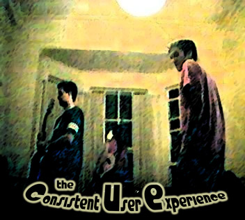

CUE
You are here: Home > Music > CUEHerein lies some random music created by yours truly (on bass) and a couple of mates, Wade and Nathan. We had fun letting off steam and jamming on a regular basis. Hence, the CUE (or, Consistent User Experience) was born.
A note - if you came here after doing a search for "Gandhara mp3" or something like that, you might like to know that the version on this page isn't the original (duh) - it's a shitty cover. No, we hadn't rehearsed it. I think it has it's moments, but not many of them.
If you'd like to sample some of the other mp3s here, I can recommend tracks 1 and 2 (particularly track 2). Also made up on the spot, they have a certain groove to them which I quite like, even if the sound quality is reminiscent of skeletons fucking in a biscuit tin, and we're all playing wrong notes and losing the beat from time to time. Tracks 5, 7 and 9 are also impromptu jams.
Track 3 is indeed a cover of the Monkey Magic theme. I quite like it, even if it lacks vocals.
Track 4 is the bad Gandhara cover. Track 6 is an even worse Rage Against the Machine effort. I claim no responsibility - I can actually play that song start to finish on bass. I was just let down by my band (and I can be snobbish cos it's MY website dammit!), who didn't know the structure of the song. Feh.
Finally, the last track may be familiar to Goodies fans.
Update - Nathan has created a jokey Myspace page for the CUE. We will use it as a dumping ground for all of our musical exploits. Click on the link to view it.
Feel free to email me and tell me what you think.
So, without further ado, I give you the debut album from the CUE.

Files available for download: